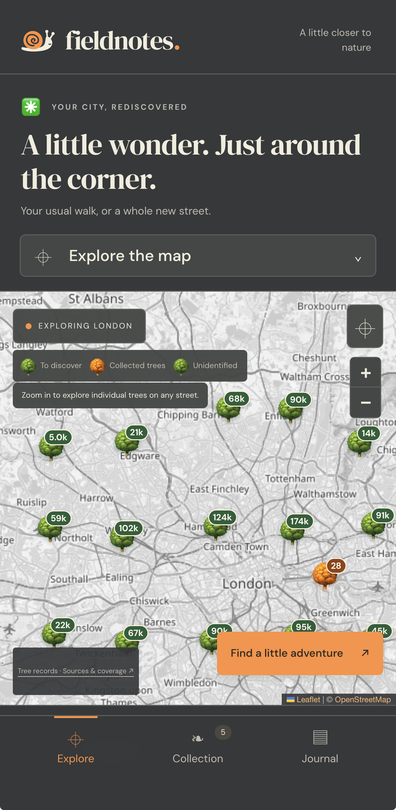

Fieldnotes.
A little closer to nature.
A little more curious about the everyday.
A personal field guide to London’s trees. Find what’s growing nearby, collect a discovery on your walk, and keep the places and observations you want to remember.
The idea
A tree can be part of your daily route for years without ever becoming familiar. I wanted to turn that passing encounter into a small moment of attention: find its name, look a little closer, and leave a note for next time.

- My focus
- Experience, interface & build
- Made for
- Everyday walks in London
- Where it is now
- Working web + iPhone prototype
A walk, in three small steps
- 01 / Explore
Find a tree on your usual route.
Browse the map and open a tree’s recorded name, location and source.
- 02 / Collect
Be there. Look a little closer.
Save an encounter when you’re nearby. An unknown tree can stay identification pending.
- 03 / Remember
Give the moment somewhere to live.
Add a note or optional personal photo, then return to that species in your journal.
Design process
The question
Could a map encourage someone to pay attention to the nature already around them? The core experience became a short loop: explore, visit, collect, remember. The journal gives a walk a memory beyond the map.
Making a city feel local
The inventory brings together over 1.2 million tree records from London’s public datasets and OpenStreetMap. That scale belongs behind the scenes. On screen, the map starts with an area, and the nearby list shows five entries before offering “See all”.
Each mapped record keeps its source. An inventory is a starting point for a walk, rather than a promise that every tree has been checked in person.
What “collected” means
Early versions marked every tree of a saved species as collected. That made the map look as though places had been visited when they hadn’t. I changed the meaning to the exact tree: a collected tree turns orange, while its unvisited neighbours stay green. Repeat visits remain separate encounters in the journal.
Leaving room for not knowing
Some source records have no confirmed species. Those trees still deserve a place in the experience. They can be collected as identification pending, keeping the original clues and optional personal photos without inventing a name.
Building for a walk
The same core interface runs on the web and inside a Capacitor iPhone app. Collection checks that the person is close to the tree. Notes and optional photos belong to private encounters, and a local copy supports continuity between visits.
The iPhone prototype is installed. Outdoor collection and the complete native photo round trip are still part of the next verification work.
What changed, and why
Under the surface
JavaScript and Leaflet for the map; Capacitor for the iPhone shell; private account sync, a database for encounters and private file storage for photos. Data checks preserve source IDs and coordinates, while regression checks cover collection identity, map counts and location rules.
1.2 million+ inventory records · 447 identified species keys · source-linked records
What I’m learning
- A map’s colours are promises. They need to mean exactly what the person thinks they mean.
- “I don’t know yet” can be a useful and honest product state.
- The details of a familiar walk can be enough to build an experience around.
Next, out on a walk
Verify the full collecting and photo journey outdoors on the iPhone, then observe whether someone new can find and save their first tree without help. Those are the next questions, before making claims about wider use.
Outdoor iPhone collection, complete native photo upload and retrieval, and post-update collection retention still require owner verification.
still growing, one walk at a time.